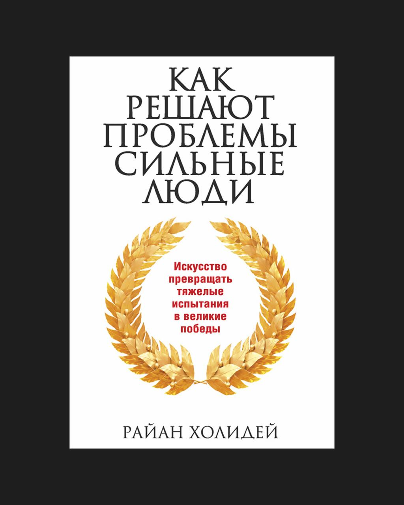

Стоицизм — крутая философия, которая помогает лучше справляться с трудностями. Я прочитал почти все книги Райана Холидея (популяризатора стоицизма), и та, о которой идет речь, как раз про это — как сильные люди справляются с проблемами, когда всё идёт не по плану.
Книга подбадривает в сложные времена и напоминает, что наша реакция в нашей власти, а любое препятствие — повод для адаптации и роста.
В карточках ключевые идеи книги.
Карточки
Препятствие - начало работы, а не сбой в системе
Сильные не воспринимают сложность как отклонение от плана: когда что-то идёт не так, препятствие превращается в строительный материал. Возникающие проблемы показывают, где на данный момент у вас находятся слабые места, именно их проработка и становится следующей итерацией. Чтобы мыслить так, нужно перестать ждать идеальных условий и привыкнуть к тому, что работа всегда идет через сопротивление - и это нормально. Сопротивление - часть пути, а не преграда.
Первое, что делают сильные - очищают восприятие
Никакие действия не будут точными, если восприятие искажено Сильные учатся видеть ситуацию без добавочного смысла и лишних эмоций: не «катастрофа», а «вот что произошло, вот вводные, вот текущее положение». Ясность - это не врождённое качество, а навык: чем больше опыта в анализе без эмоций, тем быстрее в критической ситуации включается фокус. Холидей приводит пример Томаса Эдисона, который после пожара на заводе не стал паниковать, а сказал: «Сгорело много ошибок. Теперь можно начать заново». Это не отрешённость от ситуации, это мышление человека, который умеет смотреть на реальность ясно и работать с ней.
Контроль начинается с выбора точки приложения усилия
В сложных ситуациях сильные не ждут, пока смогут полностью контролировать ситуацию - они ищут хотя бы одну область, на которую могут повлиять. Холидей называет это «фокусом на том, что в твоей власти». Такой подход снимает ощущение хаоса: даже если всё вокруг кажется нестабильным, есть хотя бы один шаг, который можно сделать, - он и становится опорой. Это может быть задача, встреча, письмо, любое решение, которое возвращает ощущение контроля. Научиться этому просто: при любом напряжении спрашивать себя - каков сейчас мой ход? И делать его, даже если он минимальный. Именно так возвращается чувство силы.
Важно не усилие, а последовательность
Суть не в том, чтобы сделать все и сразу, а в том, чтобы двигаться - хоть и минимальными шагами, но стабильно, не останавливаясь. Холидей сравнивает это с водой, которая протачивает камень: это происходит не за счёт силы, а за счет постоянства. Упорство здесь - это стратегия каждый день продолжать, и не останавливаться, даже если теряется мотивация. Можно тренироваться на простом: выбрать одну задачу и выполнить ее, несмотря на помехи. Так появляется навык доводить дело до конца, и он начинает работать везде: в проектах, в коммуникациях, в жизни.
Гибкость - это часть устойчивости
Сильные не привязываются к одному сценарию: если прямая дорога не работает - меняют траекторию. Там, где один идёт напролом, создавая себе лишние преграды, сильный может отступить, перестроиться, переформулировать. Все контролировать нельзя, но необходимо уметь адаптироваться - это то, что в вашей власти. Чтобы научиться этому - важно позволять себе менять подход: не цепляться за первую версию, а смотреть, что работает сейчас, что можно пробовать делать иначе.
Внутренний порядок - самая сильная опора в нестабильности
Когда внешнее нестабильно, сильные опираются на то, что выстроено внутри. Холидей называет это «внутренней цитаделью» - системой, которая продолжает работать независимо от внешнего давления. Принципы, мышление, ритуалы - всё это сохраняет устойчивость, когда вокруг слишком много изменений. Такая система не рождается в кризис - она накапливается в повседневной жизни через дисциплину, фиксацию, наблюдение. Когда всё спокойно, выстраивается то, что потом поддерживает в сложное время. Это и есть настоящая сила: не включаться только в момент кризиса или успеха, а быть собранным и устойчивым в любых обстоятельствах. Чтобы прийти к этому, стоит начать с простого - структурировать свое мышление и сохранять устойчивость в повседневной жизни.